How Do Airplanes Fly?
How Can a 632-Ton Machine Fly Gracefully?
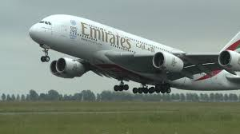
Please look at the picture on the left that shows a huge machine just getting into the air. With its payload, that particular aircraft (A380) weighs about 632 TONS. So how can something that heavy actually fly? Is it all made possible by those four huge engines? And are the wings just fixtures on which to hang the engines? While the engines play a huge role in flight, there is another component in the aircraft design that is just as important. When you analyze the design, you can see that the wings actually support all of those 632 tons. If you have ever sat in a window seat over the wings, as mighty as they are, you will see a humorous warning painted on the wing that says, "Do not step beyond here."
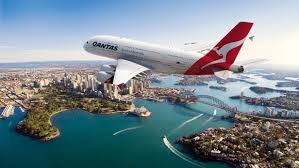
The picture on the left shows an A380 in level flight. I call your attention to the fact that those enormous engines are pointed horizontally, which means all the thrust that is generated is in the direction of the aircraft's flight line. That is, the engines are not pointed upwards which would give some upward force that could explain how the aircraft stays in the air and does not plummet back to earth like a 632-ton rock. So how does it get into the air and stay there?
The Forces at Work
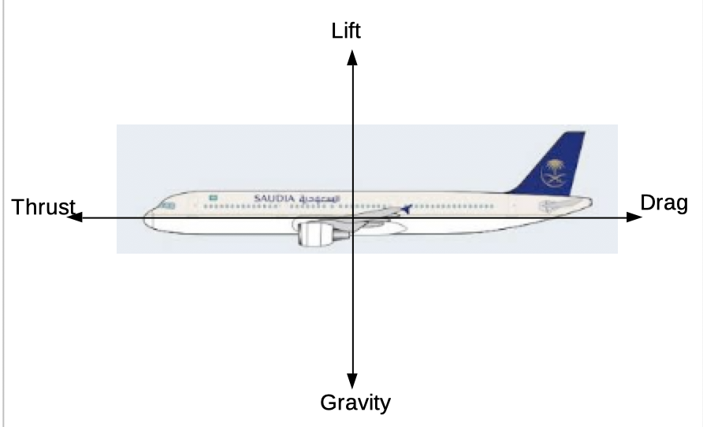
Let's have an analytical look at a side view of an aircraft. Flying aircraft have 4 forces that influence its flight.
- The most obvious force is the one pulling down on the aircraft. That force is, of course, gravity. Gravity is, after all, the force that works directly against flying.
- The second most obvious force is thrust. This force is produced by the engines and is directed towards the front of the aircraft, the direction that the aircraft is moving. As the hot gases escape the rear of the engines, their acceleration produces an equal and opposite force (Newton's third law of motion).
- The third force may not be so obvious. As the aircraft moves through the air there is friction between that air and the aircraft's surface. When you try to hit a golf ball into a 20 mph wind, you know all about air friction. The force produced by air friction is called drag. This force acts in a direction that is opposite the direction of the aircraft's flight path.
- The least obvious force is directed upwards on the aircraft and is opposite the force due to gravity. This force is called lift. The lift is the magic that enables flight. It may not be obvious where this lift comes from. The engines produce thrust that is in the direction of the flight path. There is no component of the thrust force in the direction of the lift force. So where does the lift come from?
When an aircraft is cruising at 30,000 feet at a speed of 500 mph, all 4 of these forces — lift, drag, gravity, and thrust — are in a beautiful balance. If any one of the forces were to change, that change would affect the aircraft's flight path. Since gravity is constant, a decrease in thrust would cause the aircraft to slow down, and as we will see later, that slow down also decreases the lift force. Consequently the aircraft would then lose altitude.
First, the Full Story
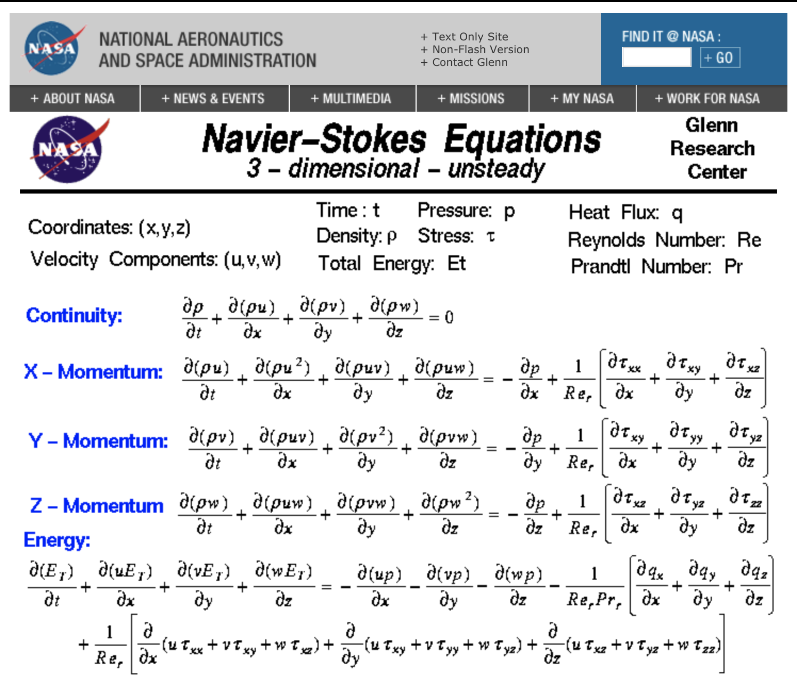
We start with the full story and then will quickly simplify the explanation. The set of equations to the left says it all. These are the famous set of rules called the Navier-Stokes equations. They were developed independently in the early 1800's by Claude-Louis Navier (France) and George Stokes (Ireland). Imagine the day when they met, compared notes and found that their results matched. When they developed these equations, Navier and Stokes were not thinking of wings at all. Instead, they were considering a more general problem, the nature of a moving viscous fluid. As you can infer by how the equations are presented, Navier and Stokes considered the balance of mass (Continuity), energy and momentum.
The solution of this set of equations is daunting, but by applying numerical techniques with the help of computers, solutions can be applied to many different kinds of fluid motion problems: flow through pipes (read: blood flow in arteries), weather models, and of course flow around aircraft, other vehicles and golf balls.
Simplified Version: Air Flow and the Magic of Viscosity
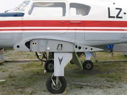
On the left is a cross section of a typical wing. If you ever have the opportunity to visit an aeronautical museum, try to examine a wing from the tip and look at its cross section. First run your hand over the top of the wing and then under the bottom of the wing. You will notice that the top and bottom of a wing have two different shapes. The bottom is more flat than is the top of the wing. As we will see this difference in shapes enables an aircraft to fly. That is, the shape of the wing gives the aircraft its lift. Now there are many different airfoil shapes. Some have thick cross sections and some have thin cross sections. The thickness of the airfoil's cross section is determined by the aircraft's payload and speed requirements.
There is something that we must understand first about how a wing (or better put, an airfoil) works. We can look at how the airfoil interacts with the air through which it moves in two ways. We can imagine the airfoil at speed moving through air that is still, or we can imagine the airfoil as stationary with the air moving at speed past it. Engineers study airfoil behavior in a wind tunnel where air is forced past a stationary airfoil. Scientifically it does not matter which view we take. Both views produce the same result. So let's adopt the stationary airfoil with air moving past it.
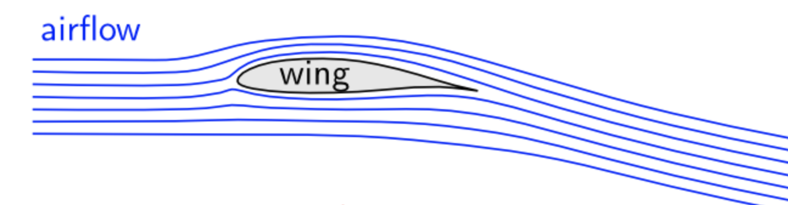
Have a look at the image on the left. It shows streamlines of an airflow as they pass from left to right over the airfoil. A streamline represents a layer of air as it moves over the airfoil. The first thing that you notice is that the airfoil distorts the streamlines. That is, if the airfoil were to be removed from the airflow, the streamlines would just look like horizontal parallel lines. You notice that the streamlines are deflected downwards at an angle.
The streamlines are deflected downwards because of the shape of the airfoil. Notice that even though the airfoil is horizontal (angle of attack is zero), there is still a downward deflection of the streamlines. This downward deflection of the streamlines causes an upward force on the airfoil. This upward force contributes to the lift force on the airfoil.
The deflection of the flow downwards also indicates that there is a lower pressure above the airfoil than below it. This difference in pressure causes an upward force on the airfoil, and this upward force also contributes to the lift force on the airfoil.

You might be wondering why the streamlines on the top follow the contour of the airfoil. Why don't the streamlines just continue horizontally? The short answer is viscosity. Viscosity is a measure of the resistance that a substance's molecules exhibit when they try to flow past each other. So viscosity is a measure of internal friction of a substance. We all have everyday experience with viscosity. Just look at the image on the left and determine the relative viscosities of the two fluids being poured out of a test tube. Which one is the most viscous?
Do not confuse viscosity with density. Whereas density measures how much mass of a substance can fit into a given volume, viscosity is a measure of resistance to shearing. For example a higher viscosity material is not necessarily more dense. When you pour olive oil into vinegar, the olive oil floats on top of the vinegar, indicating that olive oil is less dense than vinegar, even though olive oil is more viscous than vinegar.
Since air is a fluid, it also has viscosity. Since air (actually oxygen and nitrogen) is invisible, it is hard to see its viscous properties. And it was for this reason that scientists studying air flow did not recognize the presence of viscosity. A consequence of leaving out viscosity in their models was that the theoretical results did not match the experimental results.
At the turn of the last century (1900) Ludwig Prandtl wrote a paper that investigated the role of viscosity in air flow. He discovered what he called a "boundary layer" that exists very close to the airfoil's surface. The inclusion of this boundary layer into aerodynamics brought the theory in line with experimental results. The boundary layer theory explains why air flow "sticks" to the surface of an airfoil.
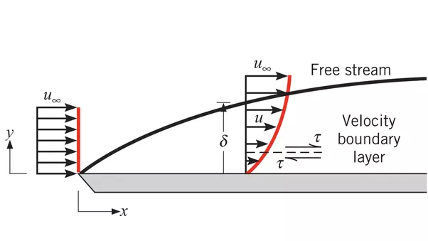
The image on the left represents flow past a flat plate from left to right. The several black arrows pointing to the right indicate the velocity of the flow (u) for different distances away from the plate (y). The length of each arrow indicates the relative velocity of the airflow at a given distance away from the plate. The red curve that terminates the velocity arrows is just a graph of the velocity profile at different distances from the plate. At the very front of the plate just before the flow reaches the plate, all the velocities above the plate are the same, so all the velocity arrows have the same length. Now as the flow progresses over the plate, notice that the velocity arrows get smaller as we look at the ones closer to the plate. In fact, right at the plate surface, the velocity of the flow is zero. That is, if we were to look at the plate surface under a powerful microscope, we would see a layer of air molecules attached (not moving) to the surface of the plate.
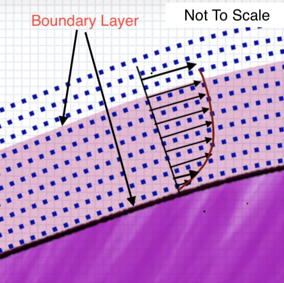
The image to the left shows (not to scale) a molecular view of the boundary layer. Each dot represents an air molecule in its own layer. The first layer of molecules right at the surface of the airfoil all have zero velocity. That first layer "sticks" to the airfoil surface. The second layer of molecules has a small velocity as they attempt to slide over the first layer. The resistance to sliding that the molecules experience is viscosity. The third layer of molecules has a little more velocity and so on. The velocity profile of the molecules is depicted by the arrows where their length represents their velocity. As we move far enough away from the airfoil surface, the velocity of the molecules is the same as the speed of the airfoil. The pink shaded region represents what is called the boundary layer.
The boundary layer is thin. Its thickness depends upon the speed of the air flow. Everyone has had experience with a boundary layer. Notice that when your car is very dusty, driving it around, even at freeway speeds does not blow the dust away. This is because within the boundary layer, the velocity of the air flow decreases as you get closer to the surface. So no matter how fast you drive, you cannot blow the dust away.
The tendency of the boundary layer to stick to the airfoil surface is what tends to cause the airflow to follow the surface. Without the adherence of the streamline to the top surface of the airfoil, there would be no streamline deflection. Without streamline deflection, there would be no upward force. So without viscosity, there would be no lift. The next time you are at 30,000 feet, pause and have a nice thought for viscosity.
Drag — The Price of Lift
Now this magic "lift" that the airfoil's shape creates comes at a price. When the streamlines are deflected downwards, there is a drag that is created. Remember that the drag force is in the direction opposite to the aircraft's flight path. This kind of drag is called form drag and is different from the drag due to friction. As stated earlier, there are many different airfoil shapes. They all have different uses. However there is one principle that all airfoils follow: the more lift, the more form drag. So the design of an airplane is a compromise between getting as much lift as possible for payload and minimizing the form drag so that the engines can still maintain the needed speed.
Once an airfoil is designed where its dimensions and shapes are defined, all of its constant properties are known. Constant properties are those properties that have fixed values throughout level flight. The actual lift and form drag forces that are generated during level flight depend upon only two factors: air density, and the speed of the aircraft. Both the lift and form drag forces are directly proportional to the product of the air density and speed squared. That is:
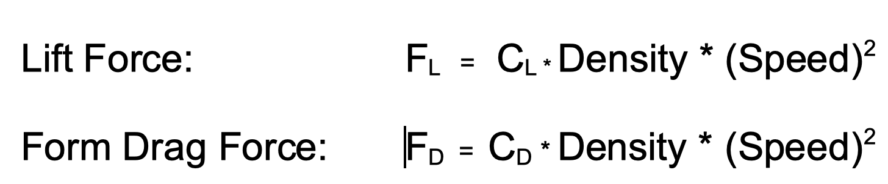
In these equations, CL and CD represent the fixed values of the airfoil for the lift and form drag respectively for level flight. I display these equations so that you can see that both lift and form drag have the same dependencies upon air density and speed. Since an aircraft flies at different speeds and at different altitudes, lift and form drag vary during a typical flight.
As the aircraft climbs, the air density decreases, thereby decreasing the airfoil's lift. So that lack of lift must be made up by a corresponding increase in speed. Fortunately the lift varies as the square of the speed, so the relationship is not linear.
More Drag Sources: The Vortex
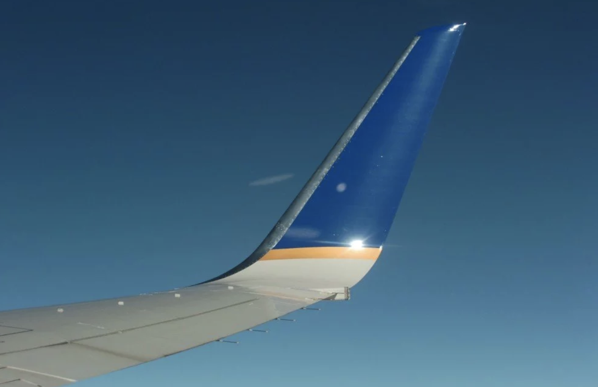
There is another form of drag that is caused by the difference in pressure above and below a wing. Fluids such as air flow naturally from high to low pressure. Fortunately for a wing the lower surface high is separated from the upper surface low by the wing itself. But at the tip of the wing, there is no more wing to separate the two pressures. So right at the wing tip, the air under high pressure attempts to flow around the wing tip up to the low pressure. This flow at the wing tip creates a vortex. And the generation of the vortex causes drag. So once you understand the cause of the drag, the obvious solution is just to put a barrier at the end of the wing that would separate the two pressure regimes and prevent the flow from high to low pressure around the wing tip. The solution is called a winglet. This solution was first proposed by a British engineer named Frederick Lanchester in 1897 — six years before the Wright Brothers' first flight! It took a century before the rest of the world finally caught up with him. It is estimated that the use of winglets reduces the form drag of an aircraft by 20%. Of course, reduction in drag translates to a savings in fuel.
Since you have arrived this far into the article, please take about 6 minutes to watch some takeoffs and landings. The video has a number of really interesting views. There are many views of vortices generated during takeoff and landing. How can you actually see a vortex? First you need humid air so that the dew point is high. Remember that humid air contains more water in vapor form (gaseous form). Water in vapor form is invisible. But when humid air is exposed to a temperature below its dew point, the water vapor condenses into liquid water. That is why you can "see" your breath when you exhale in cold air. Your breath contains water vapor (implies water in gaseous form) and when you exhale, that water vapor condenses into tiny drops of liquid water. Now when a gas goes from a compressed state (high pressure) to a less compressed state (low pressure), it gets cooler (that is how your refrigerator and air conditioner work).
So at the tip of the wing as the high pressure humid air meets the low pressure air, the expansion cools the humid air, and the water vapor condenses into liquid water. So we get to see the vortex! As you watch the video, you will see that most of the vortices are formed by the tip of the wing flaps that are down for landing. There are a few shots of wing tip vortices generated that do not have winglets.
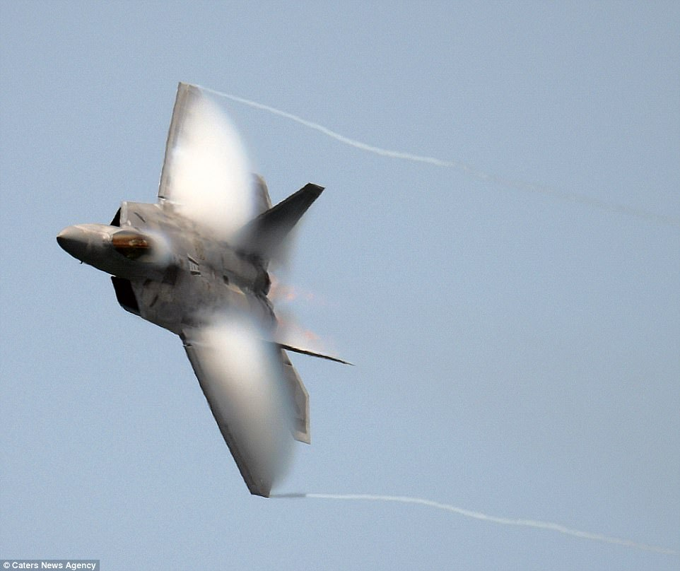
You will also see a couple of shots (actually the very first shot) of water vapor condensing on the top of a wing at takeoff. During takeoff, the pilot points the nose up, in order to increase the angle of attack. This temporary increase in angle of attack causes a dramatic drop in air pressure on the top of the wing. So we can see the water vapor condensation across the whole top of the wing. On the left as the fighter jet makes a hard turn, you can see the condensation over the top of the wings as well as the wing tip vortices.
Getting More Lift: Pull the Nose Up
So far I have discussed the behavior of airfoils when they are pointed in the direction of the air flow. This is the configuration of normal cruising conditions. The angle that an airfoil makes with the direction of air flow is called the angle of attack. In the case of level flight, the angle of attack is zero. One way to temporarily increase lift is to increase the angle of attack. With a positive angle of attack, two factors change that affect the lift force. The image on the left below shows an airfoil at close to zero angle of attack, slightly less than 20 degrees, and just above 20 degrees. The size of the arrows representing the lift and drag forces indicate their respective relative magnitudes.
- The downward deflection of the air flow is increased. This causes the coefficient of lift, CL, to increase as shown in the graph on the right below.
- The bottom of the airfoil is directly exposed to the air flow. The air flow pushes against the bottom of the airfoil, imparting an upward force that adds to the lift force.
As the angle of attack increases, it reaches a point where the flow cannot remain attached to the top of the airfoil. At this point the coefficient of lift dramatically drops, while the coefficient of drag dramatically jumps. The angle at which this dramatic change in flight characteristics occurs is called the critical angle of attack. Note that not all airfoils have a critical angle of attack of 20 degrees. That critical angle depends upon the shape of the airfoil.
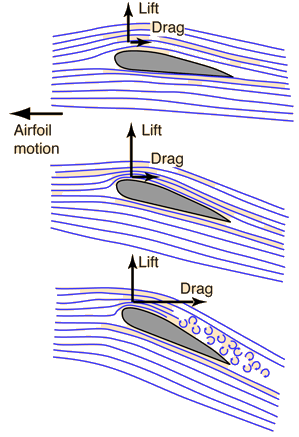
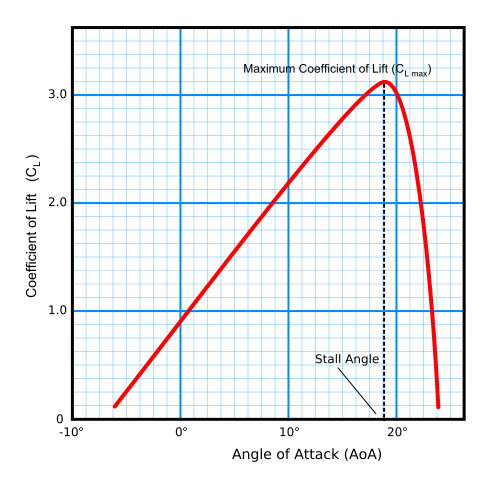
Oops … Stall
Notice in the graph that the coefficient of lift increases nicely with the angle of attack. But just before 20 degrees the lift drops drastically. This catastrophic drop in lift is called a stall. Remember that viscosity of air keeps the air flow attached to the airfoil. But viscosity has its limits. Too great of an angle of attack will cause the air flow to detach from the upper surface, and all lift associated with the deflection of the air is lost. There is still a lift caused by the air flow pushing against the bottom of the airfoil, but the drag force increases so much that the air speed of the aircraft is decreased drastically. You can view a wind tunnel experiment of an airfoil that has been put into a stall. Here is a video of a wing that is fitted with strings that show the flow over a wing as it stalls. The air flow suddenly separates from the upper surface without any gradual warning.
When the air flow separates from the airfoil, a number of large vortices form above the surface. This destroys all of the benefits of form lift and at the rear of the airfoil, the flow of the air is actually backwards right on the airfoil surface.
You may wonder why you have seen aircraft in takeoff that are pointed more than 20 degrees to the horizontal. Why doesn't the aircraft stall? Remember that the stall condition in the wind tunnel was created by making the angle of attack 20 degrees as measured against the direction of air flow. Aircraft can fly greater than 20 degrees to the horizontal if the pilot gradually points the nose up so that at no time does the angle of attack as measured against the air flow go past the 20-degree mark.
Fortunately, commercial aircraft have safeguards and designs that minimize the possibility of stalling. They also have stall recovery systems built into their designs. High performance aircraft on the other hand cannot take the hit on performance that stall recovery systems cause. Some aircraft have enough sheer power to overcome a stall.
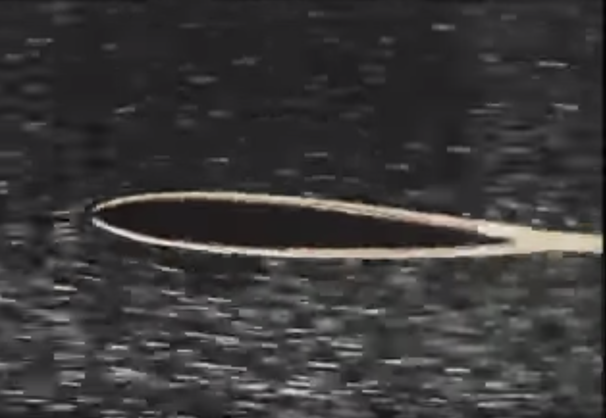
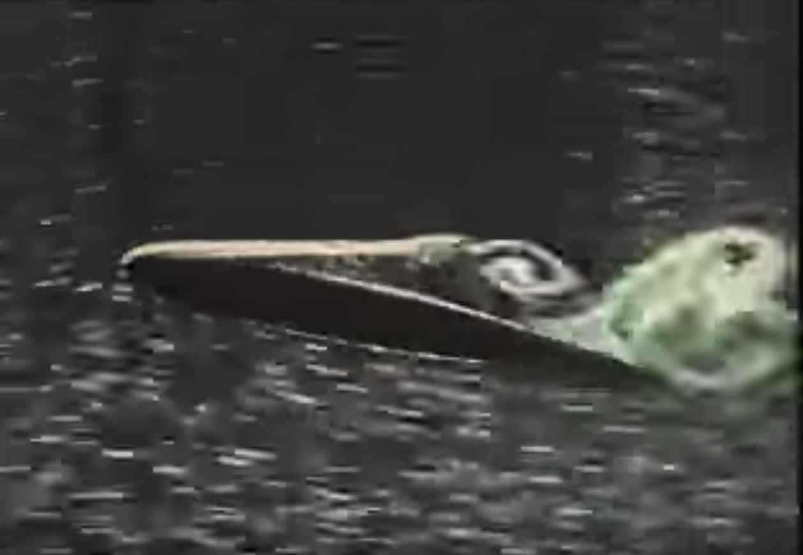
Dynamic Configuration of a Wing: Flaps
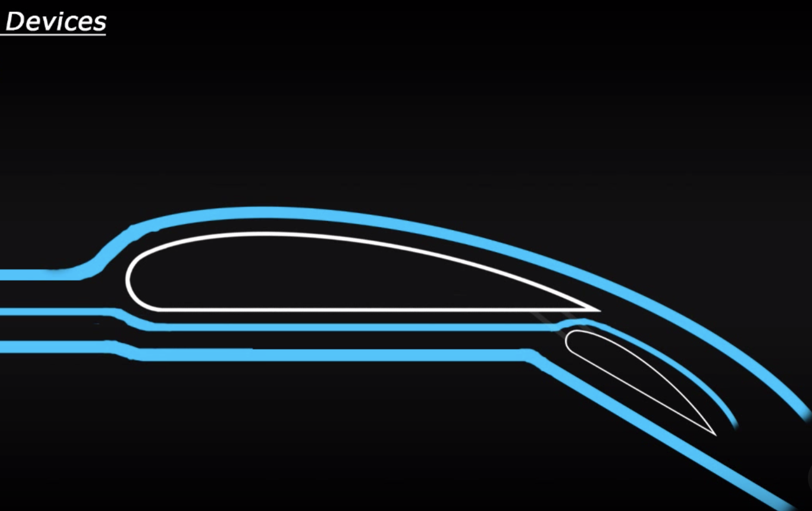
The act of landing an aircraft really puts the design to the test. You want to slow down but at the same time have enough lift to land softly. A solution to this quandary is to make a wing that can change its form characteristics dynamically. The image to the left shows an addition to the airfoil called a flap. A flap is normally tucked into the wing during regular flight but is extended when extra lift is needed. This need occurs at takeoff and landing.
The image on the left shows a flap extended behind the wing. There are three things to notice about the flap:
- The flap adds more downward deflection to the air flow which adds to the lift force.
- The flap has the shape of an airfoil so that it can make use of viscosity and keep the flow attached to its surface.
- There is a gap between the wing and the flap that allows air from under the wing to flow over the top of the flap. This extra air flow increases the adherence of the flow to the top of the flap which reduces the possibility of detachment (stalling).
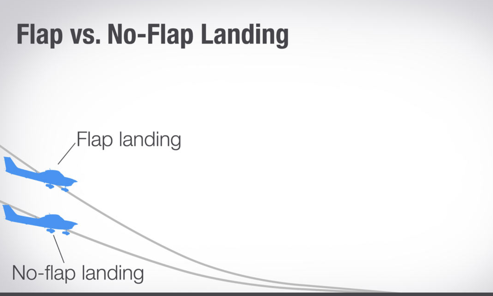
The diagram to the left shows the difference between a landing with and without flaps. Clearly the with-flaps landing allows for a steeper descent.
Transonic and Supersonic Flight
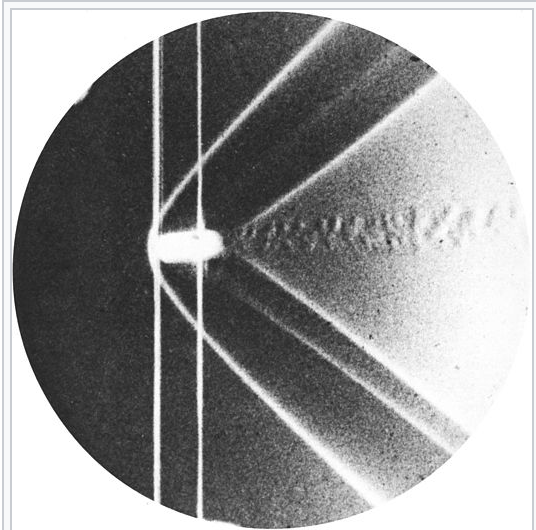
In 1887 Ernst Mach took this famous photograph of a bullet and what he called "shock waves" emanating from the front and rear of the bullet (ignore the two vertical reference lines). This photo confirmed his theory that when a projectile moves through a medium (air in this case) faster than the speed of sound in that medium, shock waves are produced by the projectile as it pushes the medium out of the way. Mach developed a term (later called the Mach number) that is just the ratio of the speed of a projectile and the speed of sound. So a Mach number of 1 means that the projectile is traveling at the speed of sound. A Mach number greater than 1 means that the projectile is traveling faster than the speed of sound. Incidentally, the speed of sound in dry air at sea level and at 68° F is 767 mph.
If you were to place a stick in water and move it very slowly in one direction, you would notice waves emanating from the stick in all directions. As you move the stick faster, you only see waves that trail the stick. This is because the water cannot support waves that move faster than the stick. This is an analogous description of a shock wave condition in air. As the projectile moves through the air at greater than Mach 1, at the point just in front of the projectile, the air is severely compressed over a short instance of time. This compression cannot propagate in the direction of the projectile since the projectile is traveling faster than the wave can propagate in the air.
So a shock wave is a boundary between a regime of high pressure and temperature and low pressure and temperature. Before the mid 1940's pilots could achieve near Mach 1 by going through a power dive. Their experience was extreme vibration and some loss of control over the aircraft. Aircraft designers realized that subsonic designs could not be used for supersonic flight.
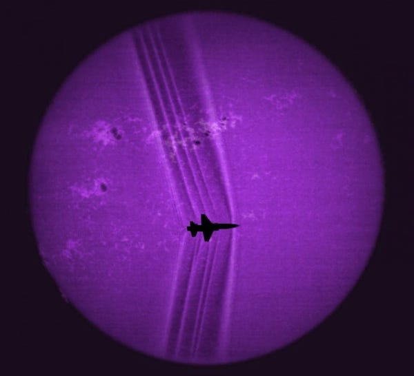
The image on the left was taken as a T-38 trainer jet passed in front of the sun. Since shock waves are borders between different density regimes, they are made visible because the light from the sun gets distorted as it passes through the shock waves. If you look carefully at the image, you can see several shock waves. Starting at the nose of the aircraft, you can see the bow shock which is the most prominent. That is followed by a second one caused by the air intake vents. That is followed by two more from the leading and trailing edges of the wing. Those are followed by the leading and trailing edges of the tail. And finally there is a weaker shock at the tail of the fuselage.
Notice the angle of the shock waves. You can tell that the T-38 is flying just above Mach 1 because the shock waves are about 10 degrees short of being perpendicular to the flight path. As speed increases past Mach 1, the angle of the shock waves increase considerably. That is, the shock waves would be bent more towards the tail of the plane. Here is a military video that shows some aircraft flying just above the deck at speeds just above Mach 1. You will want to make this one full screen.
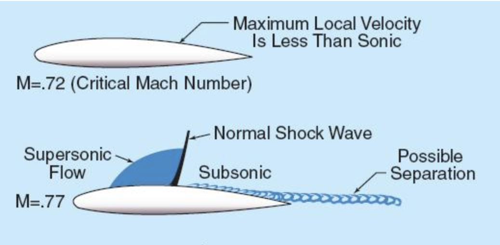
In fact, pilots experienced vibration and some loss of control even during subsonic flight (Mach < 1). They found that while approaching Mach 0.75 the aircraft behaved in an unexpected and different way. The image on the left shows why. The standard airfoil used in all planes did its job by accelerating the flow on the top side. While flying at Mach 0.75, the air on the top side of the wing (about halfway from the back of the wing) was accelerated to slightly above Mach 1. This caused a shock wave in the middle of the wing. As was later discovered, shock waves can be tolerated in flight, but not when they occur in the middle of the wing. The main reason is that the flow behind a shock wave is unpredictable and may even detach. Trouble is, the flight controls sit on the back of the wing. This regime of having a shock wave appear in the middle of a wing while the aircraft speed is subsonic is called transonic flight.
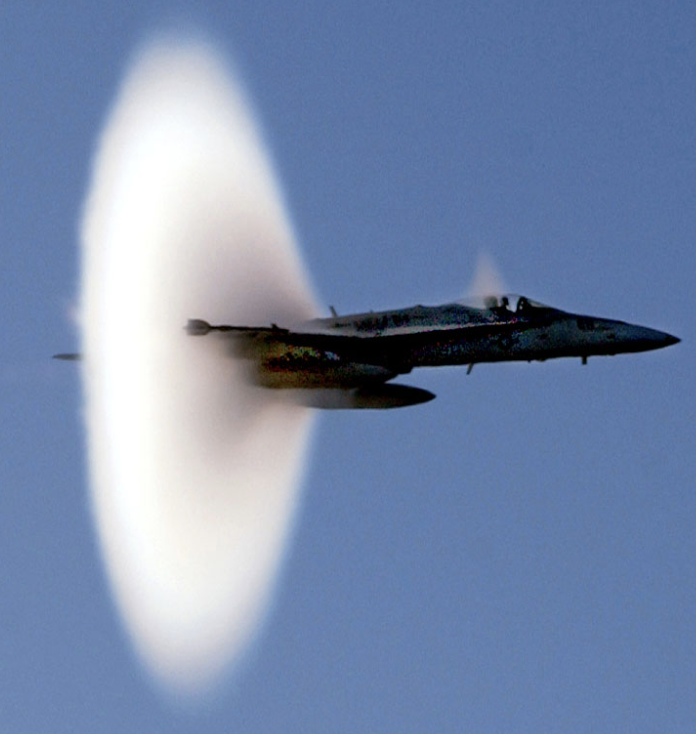
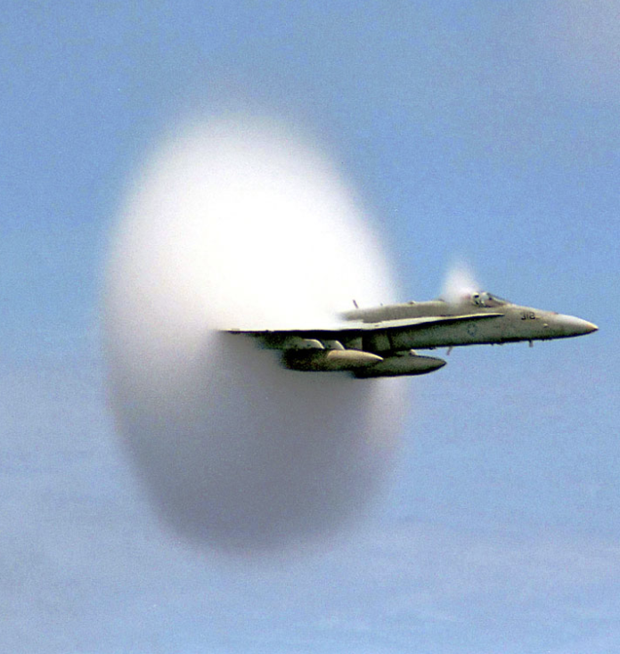
The images above show two aircraft experiencing transonic flow. Again, because of humid air, the extreme decrease in pressure and temperature causes water vapor in the air to condense out into liquid water just behind the shock wave. As the aircraft's speed passes Mach 0.85, another shock wave develops on the bottom of the wing.
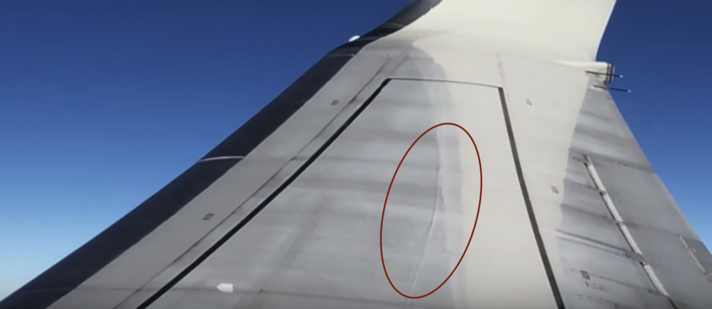
On the left is a snapshot of a small shock wave that shows transonic flow on the wing of a 737. The cruising speed of this aircraft is between Mach 0.74 and Mach 0.78, which is right in the sweet spot for transonic flow in the middle of the wing.
This is a video taken by an observant passenger looking out at the wing of a 737. The shock wave is not visibly spectacular, but you can see it dancing in the middle of the wing. Of course there is no vapor condensation at 30,000 feet, so all you can see is the light distortion as the light passes through the shock wave. Now if you only fly first class, you are too far forward in the aircraft to see this. You should try slumming it sometime and sit in coach with a window seat over the wing. That is where all the interesting action is.
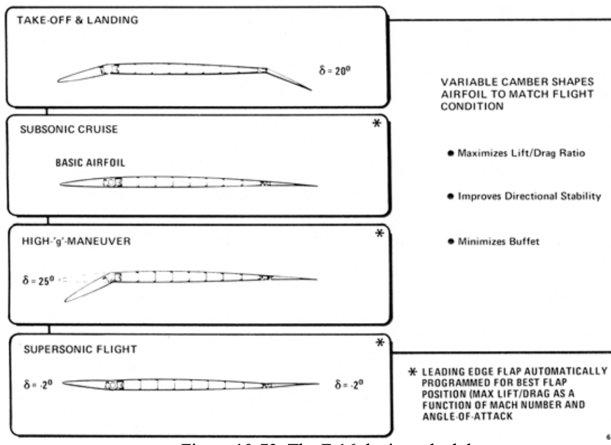
It should be apparent that work had to be done on wing design in order for aircraft to comfortably fly above Mach 1. However, at the same time these supersonic aircraft had to be able to take off and land at subsonic speeds. The image on the left shows how the designers of the F-16 made its wings configurable for different flight demands. It is interesting to note that in the supersonic configuration the front flap has a slight upward trim of 2 degrees. This trim compensates for the effects of shock waves that tend to push the nose down. That explanation is far too complicated for this discussion. Fortunately for the pilot, these flap configurations are set by on-board computers based upon air speed.
And Now Something Completely Different: Aerodynamics in Sports
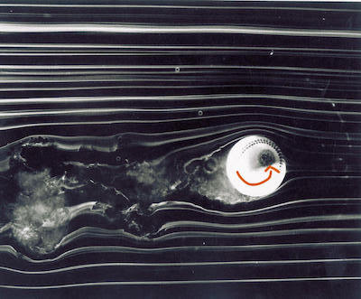
It is always fun to take a basic principle and apply it to different seemingly unrelated cases. Let's look at a spinning baseball. To the left is a spinning baseball in a wind tunnel. The ball is spinning counter-clockwise. The air is flowing from right to left. So we are looking down at the ball through its axis of rotation. The ball is rotating at about 1,000 RPM and the air speed is about 60 ft/sec (a very slow curveball).
If you just stand back and look at the flow, it should remind you of flow past an airfoil. Notice how the flow over the top of the ball is slightly deflected downwards. Remember with the airfoil as the flow was deflected downwards, there was an equal and opposite force upwards (this was our lift force on the wing). The same aerodynamic principle is applied here.
I stated that the deflection of the flow around the ball looks just like the deflection of the air around an airfoil. Remember that the deflection of the air flow around an airfoil is caused by the attachment of the flow to the top of the airfoil (good old viscosity). Same principle holds true for the spinning baseball. Since the ball is spinning counter-clockwise, the flow past the bottom of the ball is slowed down by the spin that is going in the opposite direction to the flow. This retardation of the flow over the bottom of the ball causes the airflow to detach from the bottom of the ball. On the top of the ball, the spin is in the direction of the airflow, so the flow more easily attaches to the top of the ball and stays attached longer than the flow at the bottom of the ball. Hence the air flow is deflected downwards, thereby giving the ball an upwards "lift".
The orientation in the wind tunnel model does not matter. Let's rotate our frame of reference. Imagine in the image that we are looking down on the top of a baseball that is spinning from a side-arm curveball thrown by a right-handed pitcher. The pitcher would be on the left of the image and the batter would be on the right of the image. So the ball's motion is from left to right in the image. Just as we did with airfoils, let's look at the situation with the ball stationary and the flow moving past the ball from right to left. As we look down on the ball, it is spinning counter-clockwise. From the pitcher's point of view, the ball is moving with a "hook" spin. The deflection of the flow past the ball is from the pitcher's left to right, so the equal and opposite resulting force on the ball is from the right to the left. That is, the spin on the ball makes the ball curve from right to left from the pitcher's point of view.
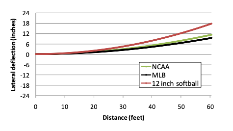
Just how much does a curveball break? A number of models have been produced and have been verified by photo experiments. The image on the left shows the results of a typical model for three different kinds of balls. The model assumes a pitch of 100 mph with a 500 RPM rotation with the axis of rotation parallel to gravity (a side-arm curve). As you can see from the graph, the deflection by the time the ball reaches the plate is about 9–10 inches for the MLB ball.
The lesson here for pitchers is that whatever direction they spin the ball, that is the direction that the ball will break. So for a right-hand pitcher, release the ball with your fingers on top of the ball and you will get a "12 to 6" curve. Release the ball with your fingers on the side of the ball and you get a sweeping curve; or better yet throw the same pitch but with more speed and you get a slider. Release the ball and let your middle finger be the last to touch the ball and turn your palm to the right and you get a sinker. Here are about 3 minutes of some great breaking balls that happened to be game winners.
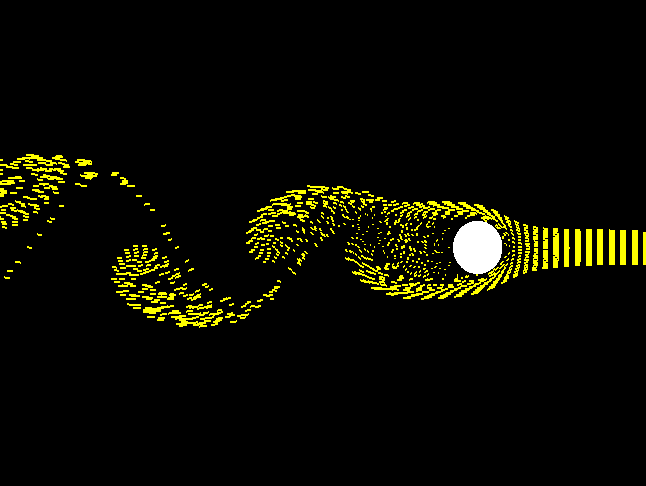
So much for spinning the ball. What happens if there is no spin at all on the ball? The animation on the left shows flow around a sphere with no spin. Notice that the flow is not smooth at all. If a ball is thrown with a speed of at least 60 mph, the flow around the sphere becomes detached. Notice that the point of detachment varies and the flow is deflected in different directions. This animation is a loop, so it looks like the detachment repeats itself. That is not true in a real experiment. The detachment is actually random, making the deflection of the airflow random, thereby making the opposite force on the ball random. Even the pitcher does not know where the ball will break. This is of course the knuckleball. Even the catcher does not know where the ball will break.
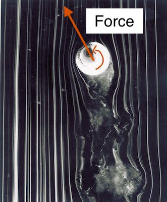
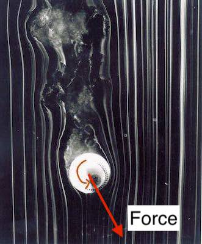
It is not just pitchers that get to play with aerodynamics. All catchers have to deal with the complexities of aerodynamics on a pop-up at the plate. The batter swings under a pitch and the ball is launched almost straight up. The catcher has to first locate the ball and then do an aerodynamic analysis of the situation. The image at the top left shows the rotating ball as it is sent into the sky. The rotation of the ball as it is on its climb gives rise to a force on the ball that tends to curve it towards the backstop (left). The tendency for an inexperienced catcher is to head towards the backstop because that is where the ball appears to be headed.
However, on its way down, the reverse happens. The ball retains its rotation, but the flow around the ball is reversed. The image at the top right shows the force direction on the ball as it falls back towards the ground. The ball is now headed back towards home plate (right). The force on the ball increases as the speed of the ball increases on its way back down. So by the time the ball becomes catchable, it is curving the most. An inexperienced catcher with the lack of aerodynamic knowledge will over-run the ball and it will fall behind him.
And Now Some Exotic Aerodynamics
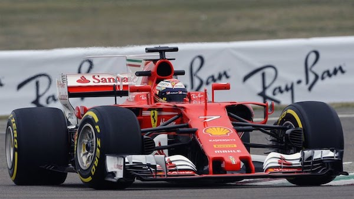
The aerodynamics, engine, suspension, tires, energy recovery and telemetry used in Formula 1 racing are all at the leading edge of their fields. A Formula 1 car can accelerate from 0 to 60 mph in 2.3 sec. It can decelerate from 100 mph to 0 in 0.75 seconds. It can accelerate from 0 to 100 mph and then back to 0 in less than 5 seconds. Deceleration from 204 mph to 44 mph in a distance of 220 feet puts about 5.2 G's on the driver. A Formula 1 car typically pulls 6.5 G's in a tight corner. Since these machines race on road courses, the most important ability is to negotiate the corners as quickly as possible. In negotiating tight "S" curves, the driver will experience about 4 G's in one direction, then half a second later, the same 4 G's in the other direction.
There is a restriction on the engine size to a maximum of 1.6 liters (that is 100 cubic inches). Yet the engines produce just under 1,000 horsepower at 15,000 RPM. That is plenty of power for straight-line acceleration. Watch as Lewis Hamilton takes a lap with an accelerometer displayed on the side of the screen. You will have to watch the video twice: first just watch him drive, then second to watch the accelerometer.
The top 6 cars typically turn lap times within 1 second of each other. Since the competition is close, every fraction of a second matters. The design of Formula 1 cars has recently concentrated on aerodynamics — not to increase straight-line speed, but rather to increase cornering speed. The way that aerodynamics is used in the design is to increase downward force, so it is no surprise that the best aerodynamics people work on Formula 1 machines. Look closely at the Ferrari in the image above left. You can see two aerodynamic devices on the car. There are two airfoil-like devices — one on the front and one on the rear. At first glance, one would suspect that the device on the front provides downward force for the front wheels, and the one in the rear would do the same thing for the rear wheels. In reality, there is much more going on with the front device.
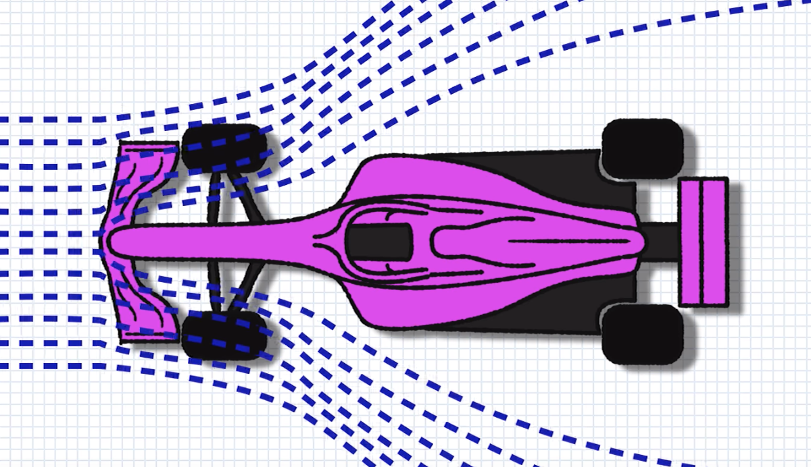
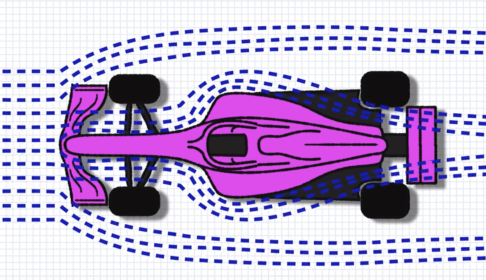
The image at the top left shows the flow around a car if the front "wing" just provided downward force. Notice that the front of the car just diverges the air flow away from the rest of the body. This kind of flow would make the rear airfoil useless, not to mention the fact that the air intake ducts would also be starved of cooling air. The image at the top right shows the flow around the car that we would like. So it appears that the role of the aerodynamicist would be to "control" the flow so that it behaves in a more supportive way.
This is where aerodynamics get exotic. Back when we were discussing airfoils that were used for aircraft, large vortices had a negative impact on the flight characteristics because they caused a considerable amount of drag. In Formula 1 design, some drag can be tolerated (because of the incredible power from the engine). So the dreaded vortex is used even though it brings considerable drag with it. The gains, however, are worth the drag price. A vortex, or better yet, two vortices can be used to "channel" air flow in a given direction. In addition, a vortex can help air flow to attach to a surface even under more adverse conditions. Therefore the front device on the car, in addition to providing some downward force, is also a vortex generator.
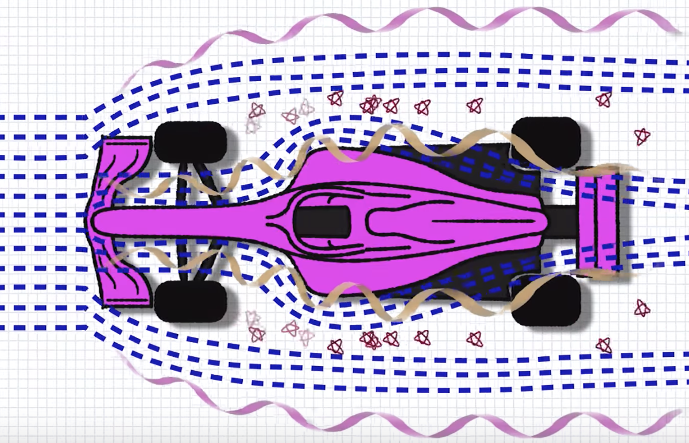
In the image on the left, notice that the front device produces two vortices on each side of the car. In order to control air flow, we need a "channel". A channel has two sides, and the two vortices serve as the sides of the "channel". There is one vortex that flows outside the front wheel, and another vortex that flows inside the front wheel, along the side surface of the car. The outside vortex serves as an outside guide for the air flow. Its purpose is to control the flow on the outside of the "channel" as well as to shield the front tire from the direct air flow. The inside vortex serves two purposes as well. The first purpose is to channel the "bad" air (denoted by the scribbles) from the front tires away from the rear tires. The second purpose of the inside vortex is to keep the air attached to the body surface so that some of it flows into the air intake ducts, and the rest flows up and over the rear airfoil.
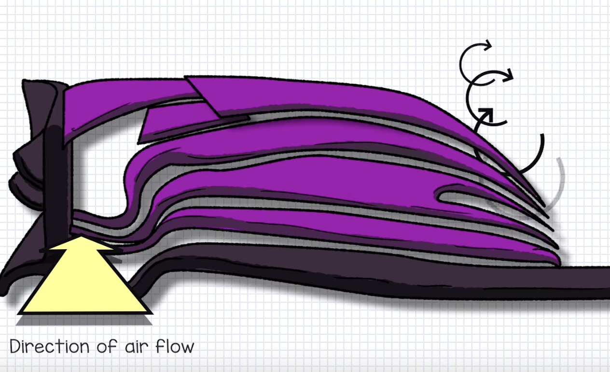
A closer look at the right front device shows how the two vortices are generated. On the right side of the device (looking in the direction of the air flow which is into the screen) we see a number of mini airfoils that are turned "upside down". High pressure is on the top, low pressure is on the bottom. Remember the winglet that is used in commercial aircraft? The purpose of the winglet was to prevent "leakage" of high pressure under the wing to low pressure above the wing. The "leakage" at the wing tip was blocked by the winglet. So if you want a healthy vortex, encourage the "leakage". No winglet here. That vortex becomes the one that travels down the side of the car and allows the flow to stay attached to the surface.
On the left side of the device (again looking in the direction of the air flow which is into the screen) is a channel that gives the air encouragement to rotate counter-clockwise. This creates the outside vortex.
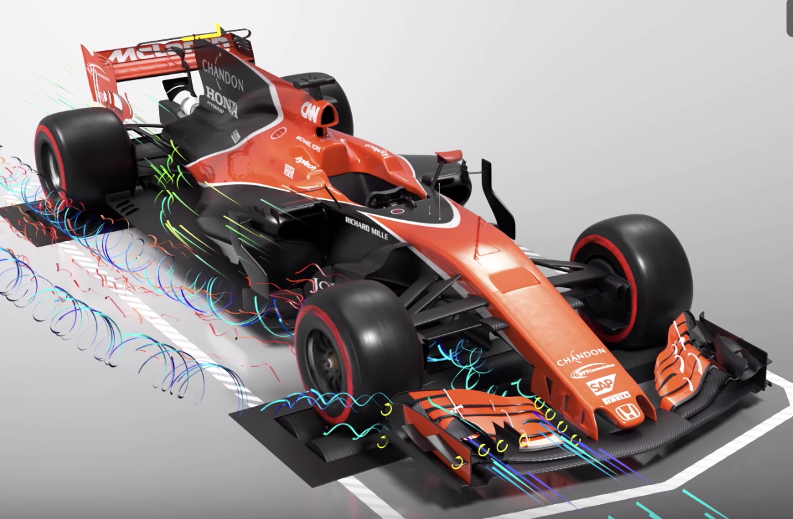
The image above puts it all together. You can see how the front "wings" are actually deflectors and vortex generators. You can follow the inside flow as it is attached to the inside surface and how this flow makes its way back to the intake ducts and to the rear airfoil. You can also see how the outside vortex helps to channel the "bad" wash away from the rear tires.
Finally for your enjoyment go on board in a Ferrari as it does one lap around the street course at Monaco. If you count, you will find that Kimi goes through about 47 gear changes in the lap. In that tight left-hand 180-degree turn he slows down to 30 mph. The maximum speed on the track is 177 mph just as he leaves the tunnel. Hope you are able to display this video on your large screen TV and put the sound through your speakers. There is just no greater thrill. I mean, yes it is thrilling to be on board a machine that is performing at its limit, but the greater thrill is the appreciation of the engineering that goes into creating such a machine.
Golf Ball Aerodynamics
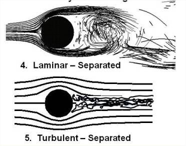
Here are some aerodynamic characteristics that we have learned so far:
- If a sphere is spinning, then the sphere experiences a force (lift) in the "direction" of the spin.
- The "lift" causes form drag on the sphere.
- Turbulent flow makes it easier for the boundary layer to stay attached to the surface.
For a golf ball, the third point above is most important. If a golf ball were smooth, the flow detaches early which causes a large amount of drag. (See image left.) If the surface of the golf ball creates turbulence, then the boundary layer stays attached longer, which causes far less drag. Of course the way ball manufacturers create turbulence is to create dimples on the ball surface.
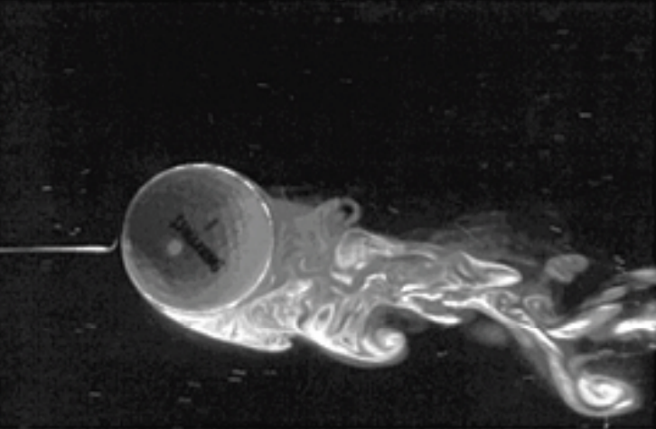
You should be able by now to look at a wind tunnel image of an object in a flow of air and determine the flight characteristics of the object. By looking at the flow at the top and bottom of the ball, you see that the flow at the bottom separates towards the front of the ball, while the flow on the top remains attached much longer past the middle of the ball. You can then conclude that the ball is spinning in the clockwise direction. Since the flow on the top of the ball remains attached longer, there is a relative low pressure on the top of the ball. You also see that the flow is deflected slightly downwards which gives the ball a slightly upwards force. The pressure difference combined with the deflection of the flow downwards gives the ball an upwards lift. As you will see in the experiments below, ball spin plays an important role in total ball carry.
You also notice in the image on the left a number of vortices that form in the ball's wake. This gives a considerable form drag on the ball and it works against your desired ball carry. In Formula 1 racing, a car has a tremendous thrust from its engine, so the drag caused by the purposefully generated vortices is minimal. However we do not have tremendous power at our disposal when playing golf, so the form drag is a significant force that works against us.
Now let's look at the flight of a golf ball as it is struck with a driver with a club head speed of 100 mph and a launch angle of 13 degrees. The two images below illustrate how much of a difference viscosity makes. In the image below on the left is the flight of a ball through a vacuum. There is no viscosity, hence no lift and no drag. The flight path is just a perfect parabola. Since there is no lift, the ball reaches a peak height of only about 12.5 yards and its total carry is about 216 yards. However, its horizontal velocity at impact is 145 mph! Remember from your Calculus course that the optimal launch angle for a projectile in a vacuum is 45 degrees. In that case, the ball would reach a peak height of about 140 yards and would have a carry of about 490 yards.
Contrast the flight path through a vacuum with the flight path through air in the image below right. Using the same parameters of 100 mph and 13 degrees, the ball reaches a peak height of about 40 yards and has a total carry of about 264 yards with a terminal horizontal velocity of 51 mph.
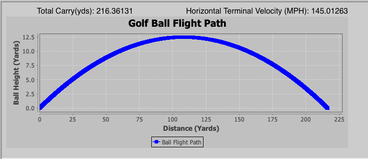
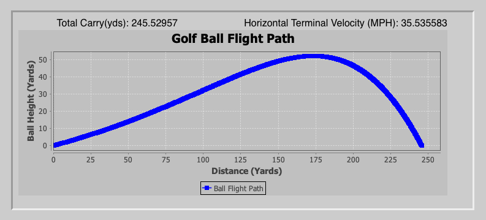
Golf Ball Flight Path Simulator
You can enter 6 different parameters to calculate and graph the golf ball flight path:
- Swing Speed (MPH): Your club head speed.
- Swing Angle: The angle your driver head makes with the ground at impact. Most golfers have an upswing of about 3 degrees.
- Club Loft: The usual loft on your driver. Note that Club Loft + Swing Angle = launch angle of the ball.
- Elevation: The elevation in feet where you are playing.
- Temperature: The air temperature (this affects air density).
- Ball Spin Rate (RPM): The backward spin rate that your driver gives the ball. More spin gives more lift. The spin rate typically decays by about 4% per second of flight.
Most of you have attended demo day where the club representatives put you with a driver on their Trackman. They typically focus on total carry. However, try this experiment: Do two sets of runs, one set with a club head speed of 90 mph with spin rates of 1,000, 2,000, and 3,000 RPM. Then do a second set of runs with a club head speed of 125 mph with the same three spin rates. This is what you will find:
| Club Head Speed 90 MPH | ||
|---|---|---|
| Spin Rate RPM | Carry (yds) | Terminal Velocity (MPH) |
| 1,000 | 197.3 | 59.6 |
| 2,000 | 216.7 | 50.1 |
| 3,000 | 218.8 | 39.3 |
| Club Head Speed 125 MPH | ||
|---|---|---|
| Spin Rate RPM | Carry (yds) | Terminal Velocity (MPH) |
| 1,000 | 313.5 | 46.5 |
| 2,000 | 315.9 | 36.0 |
| 3,000 | 281.7 | 23.6 |
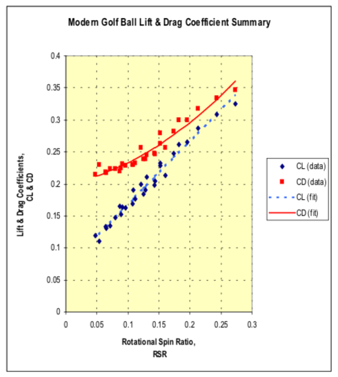
Notice that the optimal spin rate for the 90 mph swing is around 3,000 RPM while that of the 125 mph swing is around 2,000 RPM. If you look at the graph on the left, you can see the relationships between lift and drag coefficients and spin rate (in the graph spin is measured using Rotational Spin Ratio or RSR — the ratio of the spin rate to the linear velocity of the golf ball). Certainly lift increases with an increase of RSR, but at the same time so does drag increase. You can see how with a 125 mph swing speed, the performance in terms of carry drops way off with higher spin.
Here are some good exercises for you:
- Determine for your swing speed, swing angle, elevation, and club loft what is your optimal spin rate.
- Do you need two drivers with different spin rates, one for Tucson (elevation about 3,000 ft) and one for San Diego (elevation 0)?
- Does the loft on your current driver give you the optimal carry for your swing speed and ball spin?
- Should you have different loft in your driver for playing in Tucson and San Diego?
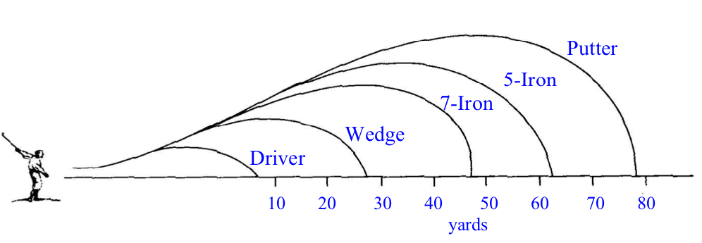
While we are on the subject of flight paths and optimal carry, consider the useful graph on the left. It is filled with useful information if you ever have the urge to chuck a club. Given how far you want to launch the club, this graph helps you select the proper club.